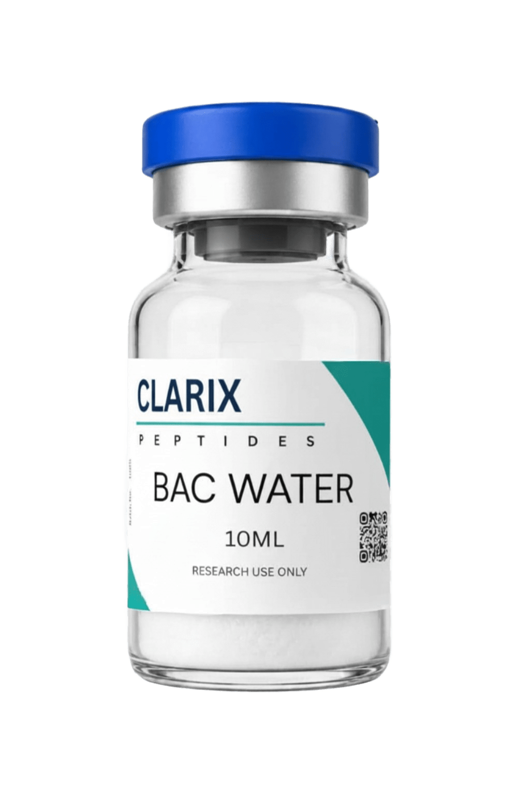

Bacteriostatic water is an essential part of any research setup involving lyophilised peptides. Almost all synthetic peptides supplied for research are in freeze-dried powder form, and bacteriostatic water is the standard diluent used to reconstitute them into solution before use. This guide explains what bacteriostatic water is, why it is preferred over plain sterile water for peptide work, the correct reconstitution technique, and where to buy bacteriostatic water in the UK.
What Is Bacteriostatic Water?
Bacteriostatic water (commonly called bac water) is sterile water for injection that contains 0.9% benzyl alcohol as a preservative. The benzyl alcohol is the defining component. It does not kill bacteria outright but instead inhibits their growth and reproduction, which is what the term bacteriostatic means. This is in contrast to bactericidal agents, which actively kill bacteria.
The benzyl alcohol concentration of 0.9% is carefully calibrated to provide effective antimicrobial protection without being sufficient to cause meaningful degradation of peptide compounds at the working concentrations used in research reconstitution. The water component is sterile, produced under pharmaceutical manufacturing conditions.
Why Bacteriostatic Water Is Used for Peptides
Multi-Use Stability
The primary reason bacteriostatic water for peptides is standard practice is multi-use stability. When you reconstitute a peptide vial, you typically do not use the entire reconstituted volume in a single session. Research protocols often involve repeated draws from the same vial across multiple experiments or timepoints. Bacteriostatic water allows the reconstituted solution to remain microbiologically safe between uses when stored correctly at 4 degrees Celsius, for a period of up to 28 to 30 days.
Peptide Compatibility
The benzyl alcohol in bac water is compatible with the vast majority of synthetic peptides used in research at standard reconstitution concentrations. The peptide structures are not disrupted by benzyl alcohol at 0.9%. For a small number of sensitive compounds, sterile acetic acid solution or sterile saline may be preferred, and the supplier's documentation should specify if bac water is not appropriate for a given compound. For the peptides stocked by Clarix Peptides, bacteriostatic water is suitable for reconstitution.
Convenience and Cost Efficiency
Using bac water for injection avoids the waste of discarding partial vials of reconstituted peptide. Given the cost of research-grade peptides, this is practically important. A single 10ml vial of bacteriostatic water UK allows for multiple reconstitutions and multiple draw sessions from each reconstituted vial.
How to Reconstitute Peptides with Bacteriostatic Water
Step-by-Step Protocol
Correct technique during reconstitution minimises peptide degradation and contamination risk. The following steps describe standard practice for laboratory reconstitution:
- Wipe the rubber septa of both the peptide vial and the bac water vial with an alcohol swab and allow to dry
- Draw the required volume of bacteriostatic water into a syringe using a clean needle
- Insert the needle into the peptide vial at an angle so the tip points toward the glass wall
- Depress the plunger slowly so the bac water runs down the inner wall of the vial rather than jetting directly onto the lyophilised powder
- Once all the water is added, remove the syringe and gently swirl the vial in a circular motion until the powder fully dissolves
- Do not shake the vial vigorously — mechanical disruption can denature the peptide
- The solution should be clear; a faint cloudiness that clears on swirling is normal. Persistent cloudiness or visible particles indicates a problem
Calculating Concentrations
The standard calculation for peptide reconstitution concentration is straightforward. If you add 1ml of bac water to a 5mg peptide vial, your resulting concentration is 5mg per ml. Adding 2ml gives 2.5mg per ml, and so on. Choose the reconstitution volume based on the working concentration your research protocol requires, not just convenience. A higher-concentration reconstitution (less bac water) gives smaller working volumes per dose, which can reduce variability.
Storage After Reconstitution
Once reconstituted with bacteriostatic water, peptide solutions should be stored at 4 degrees Celsius (standard laboratory refrigerator temperature). At this temperature, the benzyl alcohol preservative is effective and peptide degradation is slowed substantially. Solutions should be used within 28 to 30 days. Freeze-thaw of reconstituted solutions is not recommended as it can cause peptide aggregation.

Bacteriostatic Water from Clarix Peptides UK
10ml multi-dose vials. 0.9% benzyl alcohol. Sterile. Supplied for research reconstitution. Fast UK dispatch.
Common Questions About Bac Water
Can I use tap water or distilled water instead?
No. Tap water contains chlorine, minerals, and microorganisms that will degrade peptides and introduce contamination. Distilled water is sterile but contains no preservative, making it unsuitable for multi-use reconstitution. Only bacteriostatic water or pharmaceutical-grade sterile water should be used for peptide reconstitution.
How much bac water do I need per vial?
This depends on your target working concentration, not the vial size. A common starting point is 1ml to 2ml of bacteriostatic water per peptide vial, which gives a workable concentration for most assay formats. Always calculate your required concentration first and work backwards to determine the reconstitution volume.
Is bacteriostatic water the same as saline?
No. Bacteriostatic saline contains 0.9% sodium chloride in addition to the preservative. Standard bacteriostatic water contains only 0.9% benzyl alcohol in sterile water, with no salt. Both are used in research contexts, but plain bac water is the default choice for peptide reconstitution unless the protocol specifically calls for saline.